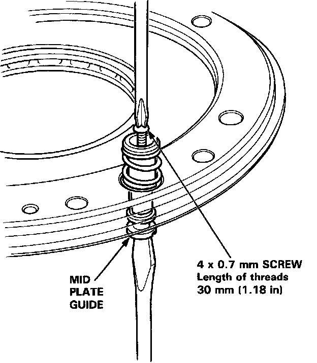
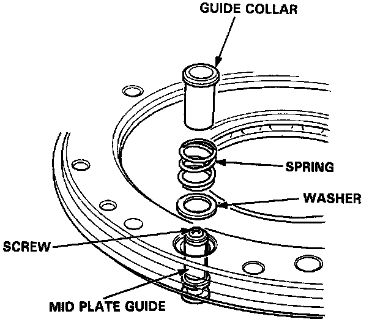
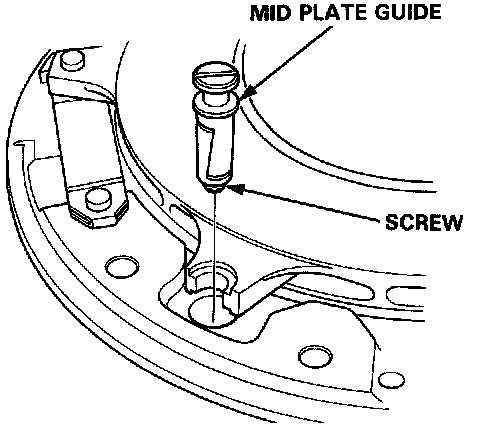
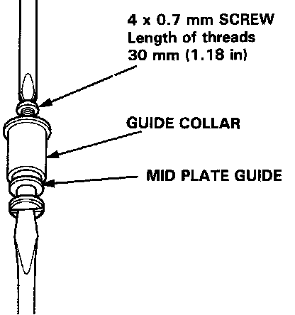
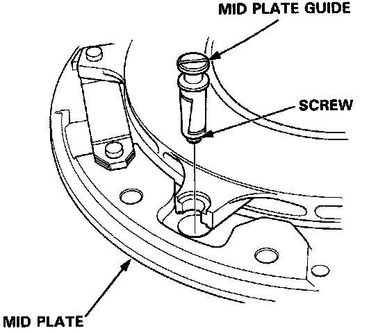
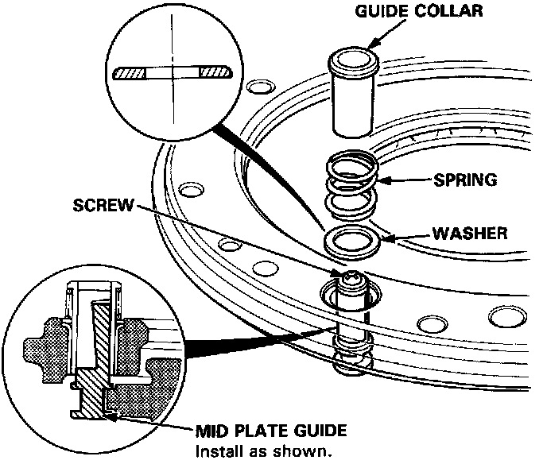

Mid Plate Guide Replacement
Mid Plate Guide ReplacementNOTE: Make sure all parts are clean before installation.

1. Thread and tighten a 4 mm screw into mid plate guide.

2. Remove the guide collar, spring and washer.

3. Remove the mid plate guide with the screw installed.

4. Thread and tighten a 4 mm screw into the new mid plate guide, then remove the mid plate guide from the guide collar.

5. Install the new mid plate guide with the screw installed.

6. Install the washer, spring and guide collar, then remove the screw.
7. Initialize the mid plate guides after installing the clutch assembly. Mid Plate Guide Initialization